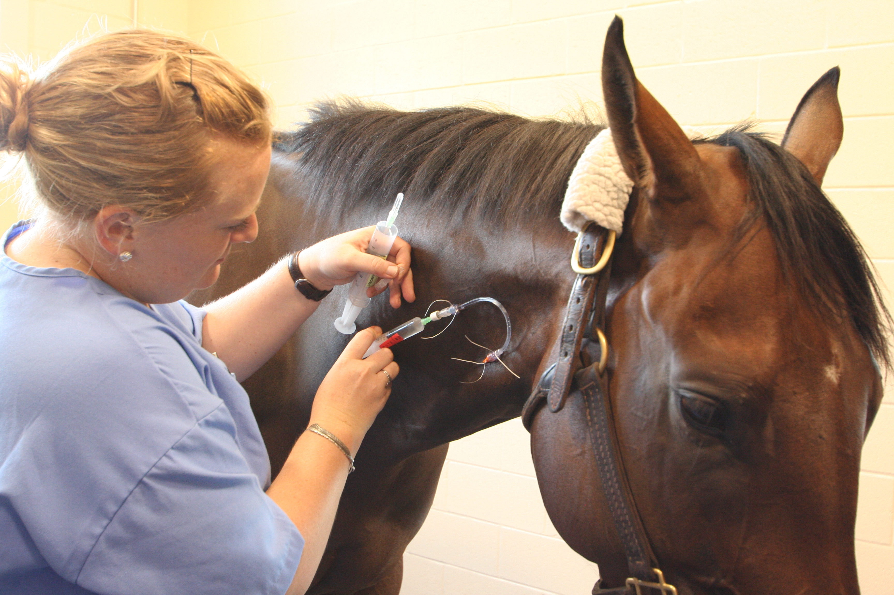
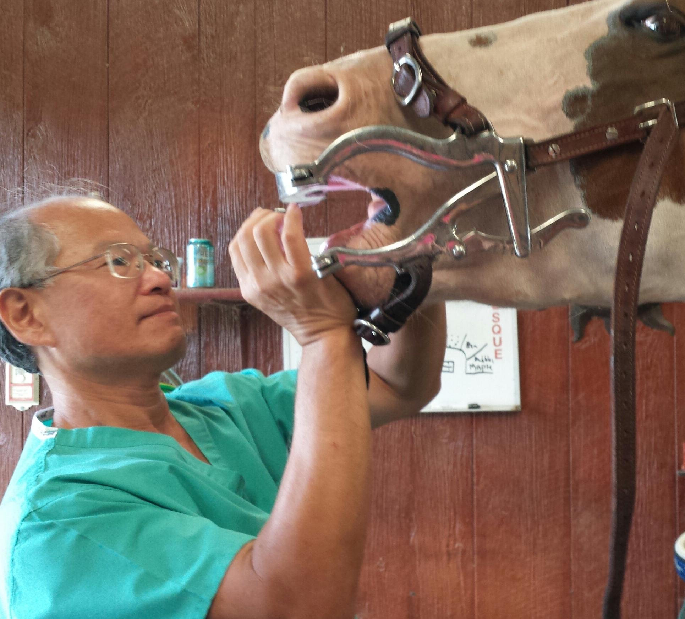
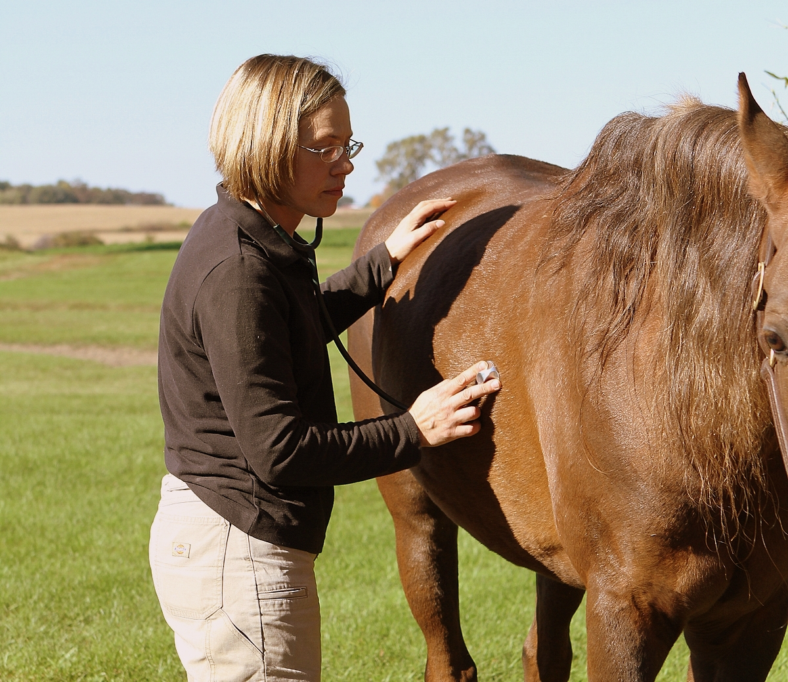
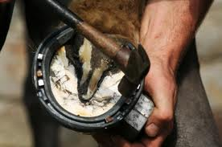
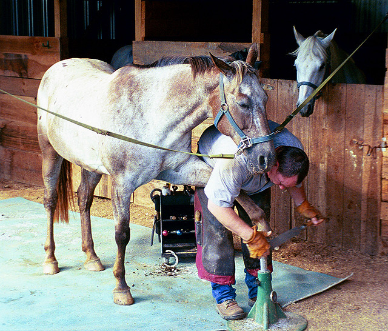
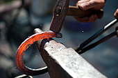

Veterinary Practices and Farriers
Veterinary Practices and Farriers
Veterinarians and farriers are very important equine health providers, and sometimes they work together to solve health issues, especially the horse's feet.




Equine Veterinary Practices
Veterinarians usually come to your farm to examine their patients for any number of conditions. Their services include vaccinations for diseases, treatment for hoof and leg conditions, ‘floating’ teeth, prescribing antibiotics and medications for maladies like abscesses and joint pain relief, and pregnancy tests. You will want their phone on your ‘speed-dial.’
| Practice Name | Veterinarian(s) | Web Site | Street Address | County | Services Offered |
|---|---|---|---|---|---|
| Flat River Veterinary Hospital | Dr. Lloyd Heron, Dr. John Seal | http://www.flatriverveterinaryhospital.com/ | 325 Red Mountain Rd., Rougemont | Durham/Person | Equine services |
| Mid State Equine Hospital | Phone : 336-622-6447 | http://midstateequine.com/ | 2504 Staley Store Rd, Liberty | Alamance | Equine services |
| Iron Will Mobile Veterinary Services | Dr. John Parks, Dr. Chelsey Miller | http://www.ironwillvets.com/index.html | 2445 Vaughn Rd., Burlington | Alamance | Equine and large animal services |
| Tillotson Equine | Dr. K. Tilllotson | http://www.tillotsonequine.com/ | 2842 Leasburg Rd., Roxboro | Person | Equine services |
| Triangle Equine Mobile Veterinary Services | Dr. Sally Vivrette | http://www.triangleequine.com/ | 103 Candy Apple Court, Cary | Wake | Equine services, reproductive speciality |
Farriers
Farriers are very important for the health of your horse. Every 4 - 7 weeks they trim the hooves and put on horseshoes. They make recommendations for foot care treatments.



| Farrier/Business Names | Business Name | Phone Number | Website | County(ies) | Services Offered |
|---|---|---|---|---|---|
| Craig Horvath | Craig's Farrier Service | 919-995-5651 | http://www.craigsfarrierservice.com/ | Wake | Cold and hot shoeing, balancing, trims |
| Matt Flood | null | (336) 437-4559 | null | Alamance | shoeing, trims |
| Geoff Morrison | Shod Steed, LLC | 919-264-4735 | http://www.shodsteed.com/ | Alamance, Orange | Cold and hot shoeing, trims |
| Scott Strong | Null | 336-608-9989 | https://www.facebook.com/scott.strong.3591 | Guilford, Alamance, Forsyth | Cold and hot shoeing, balance and trims |